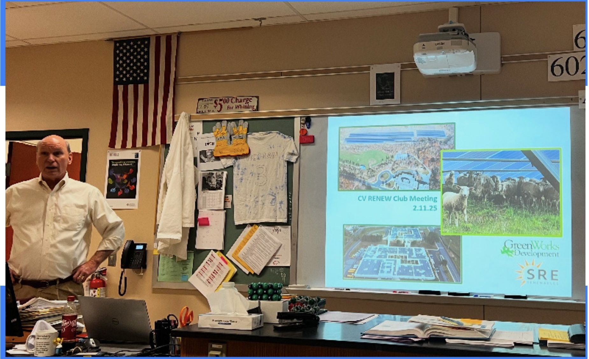
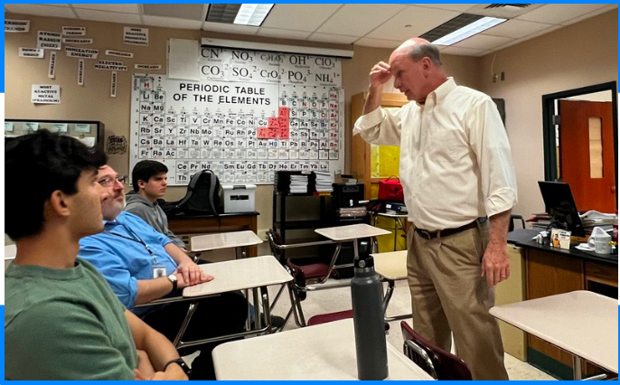
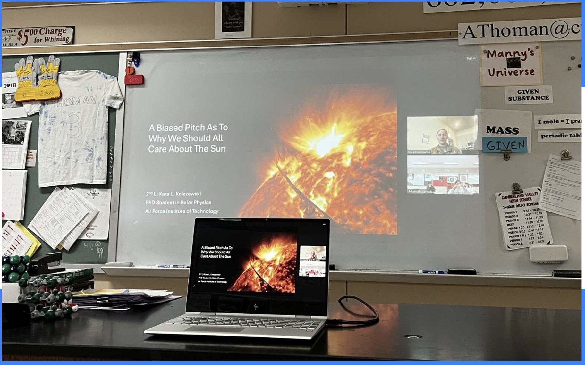

Meetings
SRBC Event (11/05/24)

We would like to give a huge thank you to Mr. Dehoff, Executive Director P.E of the Susquehanna River Basin Commission, for coming to Cumberland Valley HS to showcase students the nexus between energy and water. Mr. Dehoff provided excellent examples on energy related water usage in Central PA, as well as showing the students current trends in energy production and water conservation. He even went further in showing us initiatives to improve sustainability. We are incredibly grateful for the insight SRBC has provided our students!
GreenWorks Event 1
 At our recent RENEW meeting, we had the privilege of hosting Doug Neidich, CEO of GreenWorks Development, as a guest speaker. He provided insightful discussion on the company’s commitment to expanding solar energy projects across the Northeastern United States, highlighting their innovative solutions to the posing and growing energy crisis. Additionally, he shed light on the intricate relationship between politics and the energy sector, explaining how policy decisions directly influence the growth and implementation of sustainable solutions. His expertise and perspective offered a deeper understanding of the challenges and opportunities in the renewable energy industry. Thank you, Mr. Neidich, for taking the time to speak with us—it was truly a pleasure. We can’t wait to see you again for another discussion on the role of nanotechnology in the energy sector!
Naval Academy: CME and Flare lesson
Thank you Ms. Kara Kniezewski, US Naval Academy PhD Graduate in Astrophysics with 13 accredited research papers, for taking time to help students at the high school understand more about coronal mass ejections (CMEs) and solar flares. Students were surprised upon learning how large of an effect CMEs can have on our communication systems and power distribution across energy lines. Additionally, the lesson on magnetic fields truly highlighted the importance of physical and chemical knowledge when dealing with energy.
Future Meetings
Stay tuned for future posts from our collaboration with PPL!